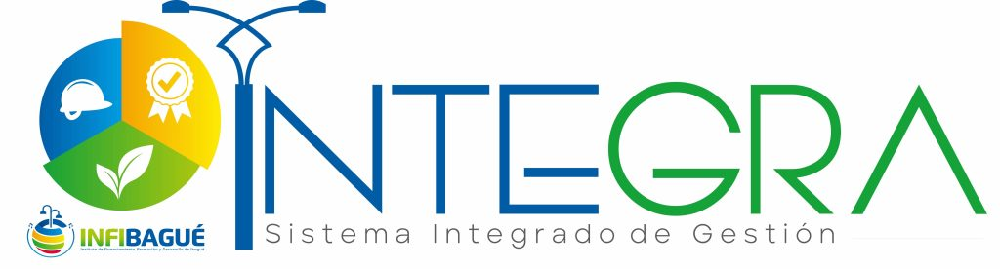
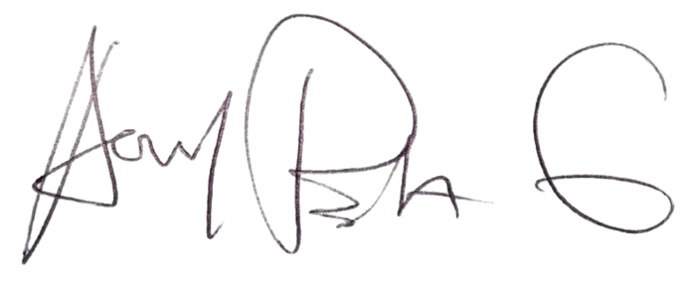

Instituto de Financiamiento, Promoción y Desarrollo de Ibagué - INFIBAGUÉ
Identificado(a) con cédula de ciudadanía 18003115 realizó el día 17/02/2026 la inducción y reinduccion en Seguridad y Salud en el Trabajo de la entidad y aprobó la respectiva evaluación. La presente constancia tiene validez para aplicación y uso al interior de la entidad, con el fin de dar cumplimiento al Decreto 1072 de 2015, Libro 2, Parte 2, Título 4, Capítulo 6, Articulo 2.2.4.6.11., Parágrafo 2.
Yo ANTONIO EDUARDO SAAMS DELAROSA Identificado(a) con cédula de ciudadanía 18003115 me comprometo a dar cumplimiento a las obligaciones en Seguridad y Salud en el Trabajo (Decr. 1072/2015):
- 1. Procurar el cuidado integral de mi salud. Contar con los elementos de protección personal necesarios para ejecutar la actividad contratada, para lo cual asumiré su costo.
- 2. Informar a los contratantes la ocurrencia de incidentes, accidentes de trabajo y enfermedades laborales.
- 3. Participar en las actividades de Prevención y Promoción organizadas por los contratantes, los Comités Paritarios de Seguridad y Salud en el Trabajo o Vigías Ocupacionales o la Administradora de Riesgos Laborales.

